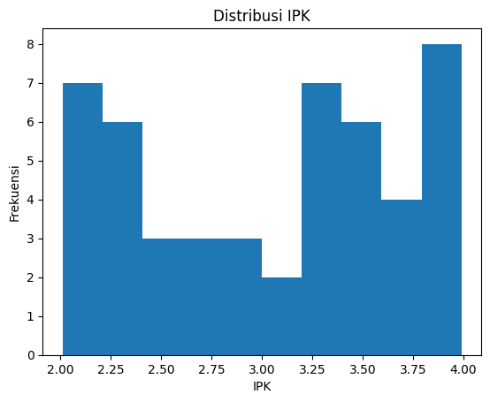
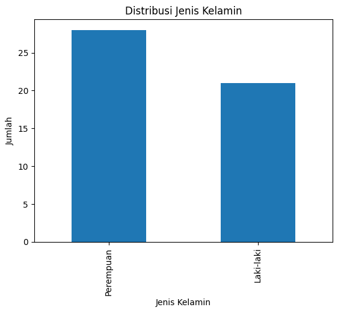
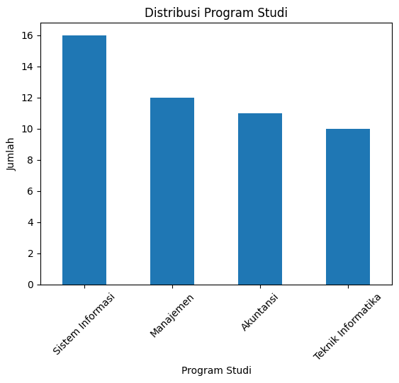
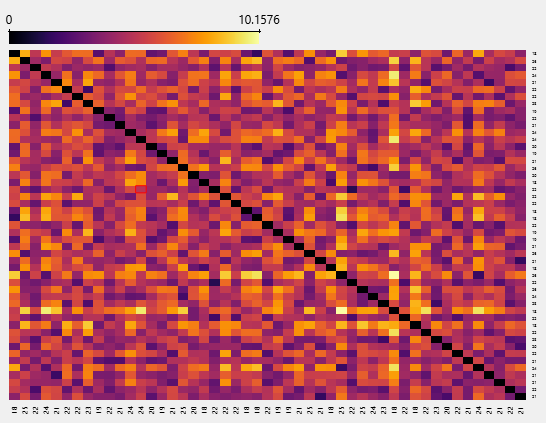
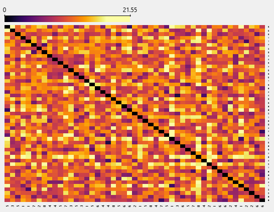
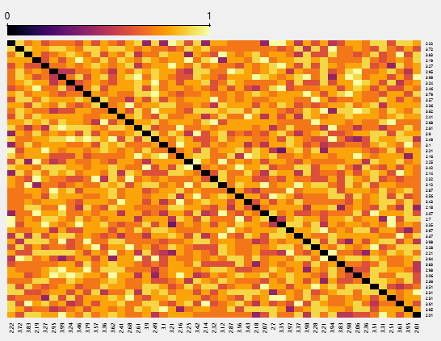

tugas#
Data Understanding#
Dataset yang digunakan merupakan data mahasiswa mahasiswa.csv:
Ringkasan Dataset#
Jumlah observasi: 49 mahasiswa
Jumlah variabel: 11 kolom
Missing value: Tidak ada
Jenis data: Numerik dan Kategorikal (termasuk ordinal dalam bentuk kategori teks)
Struktur Data#
Kolom |
Tipe Data |
Jenis Variabel |
Keterangan |
|---|---|---|---|
ID |
int |
Identifier |
Nomor unik mahasiswa |
Jenis_Kelamin |
object |
Kategorikal |
Laki-laki / Perempuan |
Usia |
int |
Numerik |
Rentang 18–25 tahun |
Program_Studi |
object |
Kategorikal |
Jurusan mahasiswa |
Semester |
int |
Numerik |
Semester 1–8 |
IPK |
float |
Numerik |
Rentang 2.01–3.99 |
Jumlah_Organisasi |
int |
Numerik |
Rentang 0–5 |
Tingkat_Kepuasan |
object |
Ordinal |
Sangat Rendah – Sangat Tinggi |
Motivasi_Belajar |
object |
Ordinal |
Sangat Rendah – Sangat Tinggi |
Status_Beasiswa |
object |
Kategorikal |
Ya / Tidak |
Status_Kerja |
object |
Kategorikal |
Tidak Bekerja / Part Time / Full Time |
Statistik Deskriptif (Numerik)#
Variabel |
Mean |
Min |
Max |
Std Dev |
|---|---|---|---|---|
Usia |
21.45 |
18 |
25 |
2.15 |
Semester |
4.33 |
1 |
8 |
2.17 |
IPK |
3.04 |
2.01 |
3.99 |
0.66 |
Jumlah_Organisasi |
2.59 |
0 |
5 |
1.63 |
Kolom ID tidak dianalisis karena hanya identifier.
Karakteristik Variabel Ordinal#
Tingkat_Kepuasanmemiliki 4 kategoriMotivasi_Belajarmemiliki 5 kategoriKategori berbentuk teks (misal: Rendah, Sedang, Tinggi), sehingga perlu encoding ordinal jika digunakan untuk modeling
Kualitas Data#
Tidak ada missing value
Semua ID unik (1–49)
Tidak ada nilai di luar rentang wajar
Dataset relatif bersih dan siap dianalisis
Rekomendasi Preprocessing#
Hapus kolom
IDEncoding:
One-Hot: Program_Studi, Status_Kerja, Jenis_Kelamin, Status_Beasiswa
Ordinal Encoding: Tingkat_Kepuasan, Motivasi_Belajar (berdasarkan urutan level)
Scaling numerik jika menggunakan model berbasis jarak
Kesimpulan Awal#
Dataset terdiri dari 49 mahasiswa dengan karakteristik demografis, akademik, dan aktivitas organisasi.
Data sudah bersih dan dapat langsung digunakan untuk:
Analisis deskriptif
Clustering mahasiswa
Klasifikasi (misalnya prediksi kepuasan atau performa akademik)
Analisis hubungan IPK dengan faktor lain
Visualisasi Data Mahasiswa#
1. Distribusi IPK#

2. Distribusi Jenis Kelamin#

3. Distribusi Program Studi#

Mengukur Jarak Dataset Mahasiswa#
- Rumus Euclidean Distance#
Untuk dua mahasiswa A dan B:
[ d(A,B) = \sqrt{(x_A - x_B)^2} ]
Karena hanya menggunakan satu variabel (Usia), maka:
[ d = |Usia_A - Usia_B| ]
Euclidean Distance (Variabel: Usia)#

Interpretasi#
Nilai kecil → usia hampir sama
Nilai besar → perbedaan usia jauh
Nilai 0 pada diagonal → jarak terhadap diri sendiri
Karakteristik#
Cocok untuk data numerik kontinu
Sensitif terhadap outlier
Mengukur jarak secara geometris
- Rumus Manhattan Distance#
[ d(A,B) = |x_1 - y_1| + |x_2 - y_2| + … + |x_n - y_n| ]
Jika hanya menggunakan Semester:
[ d = |Semester_A - Semester_B| ]
Manhattan Distance (Variabel: Semester)#

Interpretasi#
Nilai kecil → semester hampir sama
Nilai besar → semester sangat berbeda
Karakteristik#
Lebih stabil dibanding Euclidean
Tidak menggunakan kuadrat
Cocok untuk data numerik diskrit
- Rumus Hamming Distance#
[ d(A,B) = \begin{cases} 0, & \text{jika sama} \ 1, & \text{jika berbeda} \end{cases} ]
Jika lebih dari satu atribut:
[ d = \frac{\text{jumlah atribut berbeda}}{\text{total atribut}} ]
Hamming Distance (Variabel: IPK yang Dikategorikan)#

Interpretasi#
0 → kategori sama
1 → kategori berbeda
Karakteristik#
Cocok untuk data kategorikal atau biner
Tidak cocok untuk numerik kontinu tanpa kategorisasi
Perbandingan Metode Distance#
Metode |
Tipe Data |
Sensitif Outlier |
Cocok Untuk |
|---|---|---|---|
Euclidean |
Numerik kontinu |
Ya |
Usia, IPK asli |
Manhattan |
Numerik diskrit |
Lebih stabil |
Semester |
Hamming |
Kategorikal/Biner |
Tidak relevan |
Jenis kelamin, status, kategori IPK |
Kesimpulan#
Euclidean Distance cocok untuk variabel numerik kontinu seperti Usia.
Manhattan Distance lebih stabil untuk data diskrit seperti Semester.
Hamming Distance hanya tepat untuk data kategorikal atau data numerik yang telah dikategorikan.
Jika dataset memiliki campuran numerik dan kategorikal, metode yang lebih tepat adalah:
Gower Distance
Atau normalisasi + encoding sebelum clustering
Penulis:
Analisis Distance Matrix Dataset Mahasiswa